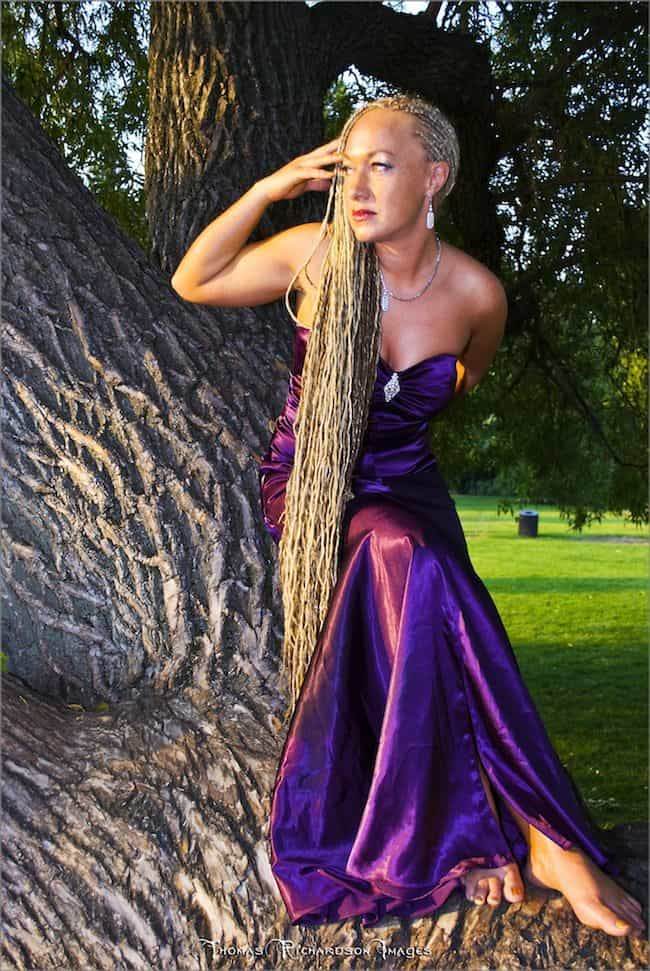
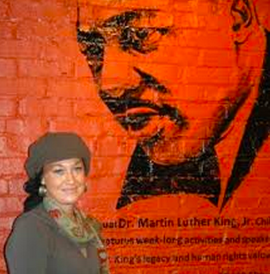

< < < Back
“Serial Litigant” And Race Fantasist Rachel Dolezal Has A History Of Opportunistic Rape Accusations – Return Of Kings
Provided you haven’t been living under a proverbial rock, you would know that the farce surrounding compulsive fraud Rachel Dolezal is getting bigger still. News has emerged that she previously accused her now ex-husband of forcing her to participate in a sex tape, a clear euphemism for rape. Far from shockingly, given what we already know about her, Dolezal made the accusation when a court was attempting to determine residency arrangements for their young son Franklin after the couple parted ways.
The judge, perhaps sensing the inherent looseness of her “factual” disposition, found Joshua Moore was a competent father and awarded joint custody. After all, Dolezal makes Native American-channeling Senator Elizabeth Warren look like Honest Abe Lincoln.
This is not the end of the story (and how could it be?). Dolezal’s son (it is ambiguous as to whether this means Franklin or the adoptive brother Isaiah she seems to be raising) made a flagrantly false hate crime allegation to obfuscate his purported involvement in broken wine bottles at a grocery store. Without mitigating what could be significant responsibility on his part, the young relative has clearly learned from a pro, either his biological mother or adoptive sister or mother (don’t worry, I’m confused, too).
The cases may not seem linked, minus the grossly unsubstantiated (and likely contextually false) rape accusations against Moore, but Dolezal joins a menagerie of other female fantasists, Emma Sulkowicz and Jackie Coakley et al, who milk attention for career advancement or social validation and popularity. Their wishes are granted like Aladdin’s Genie, receiving laudatory praise or sympathy along the way from both the media and others allergic to impartial factual analysis and due process.
Dolezal’s bizarre hate crime allegations

“Rapunzel, Rapunzel… for facts I don’t care!”
Thankfully, investigations into “racial” hate crimes alleged by Rachel Dolezal have been suspended as of this week. The most bizarre one that she made herself (presuming the son made his own via her atrocious example and not explicit coaching) involved Dolezal claiming she received threatening hate mail in the Spokane NAACP’s post office box.
The USPS, even after its local employees were grilled by police, maintained that the letter could only really have been placed there by someone with a key to the box. Strangely, there was no date stamp or bar code on the correspondence, a dead giveaway of something profoundly fishy.
Although we can expect SJWs and other do-gooders to call critics “racists” and “victim-blamers” for questioning her accounts of so many “disparate” events, Dolezal has already been outed as a fantasist with her life-in-blackface deception. Moreover, this should be relieving news for the innocent Joshua Moore.
It’s still tragic for him overall, though. Yes, his ex-wife has so many frauds and other deceptions going on which undermine her credibility. But to have his name dragged through the mud, again, is something he deserves substantial compensation for, not that Dolezal will be getting (hopefully) much in the way of a steady job going forward.
She previously sued Howard University for anti-white, gender, and pregnancy bias

Martin Luther King just barfed in his grave because of this woman.
Prior to her Academy Award-worthy turn as Rachel Dolezal: Black Woman, Spokane’s favorite storyteller, then a “non-African-American,” believed her artwork was being taken down to make way for students… because they were black and she was white. It seems that pretty much the only thing Dolezal hasn’t sued for in terms of discrimination or somehow cried an “-ism” about is on the basis of disability (stay tuned on that front!).
Despite the continued, fanatical defense of her by many elements both within the NAACP and followers of the new pseudo-science of “transracialism,” the import of adding the Howard University debacle is evident. Dolezal is putting yet another nail in the coffin for believing women who vacuously advertise themselves front and center when fighting “injustice” they can’t prove.
Dolezal’s conflicting history nevertheless has a common theme: an obsession with imagined victimization and a narcissistic craving for attention and the “admiration” of others. Her being exposed as a white woman didn’t fundamentally alter her belief that she is indeed black.
The “logic” she breathes life into is simple: facts only exist as enunciated and supported by her. White parents equals black girl if Dolezal says it does. When enough people seek to make excuses for these delusions, it only encourages more Rachel Dolezals both publicly and privately.
SJWs are in spectacular crisis
Because of Dolezal’s magical powers for assuming new races, she and Sulkowicz are actually sisters.
Sulkowicz, Coakley, Dolezal, Belle Gibson… in the last twelve months, more has transpired to back up the desperate need for due process around rape accusations, or basic incredulity about fanciful stories (Gibson’s fake cancer), than ever before. And it’s largely because of these fabulists and women like them.
Yet we shouldn’t depend on these preeminent cases. The investigation of allegations, especially amorphous ones that coincide with a woman’s self-promotion, should be stringent and not predicated on a popularity contest, neo-Court of the Star Chamber or political lucky door prize.
In other purposely inflamed events involving crowd behavior, such as during the Ferguson and Baltimore riots, SJWs have been forced to selectively focus on details. And they have had to distinctly and dogmatically ignore others.
Autopsy reports that didn’t contradict and probably supported Officer Darren Wilson’s account were ignored in the social bloodbath that followed the shooting of violent shoplifter Michael Brown. After Freddie Gray died, race-baiters like Al Sharpton deliberately turned the narrative into a white-sponsored anti-black program of hate and persecution, forgetting that three of the six officers, including the police driver allegedly most responsible for Gray’s death in the back of a vehicle, were black.
Joshua Moore doesn’t deserve the lies and other untruths of his vindictive, psychopathic ex-wife. But unlike Emma Sulkowicz’s victim Paul Nungesser, at least far less people are going to ever believe Rachel Dolezal’s kooky defamation of him.
Read More: NAACP President Rachel Dolezal Outed As White Woman